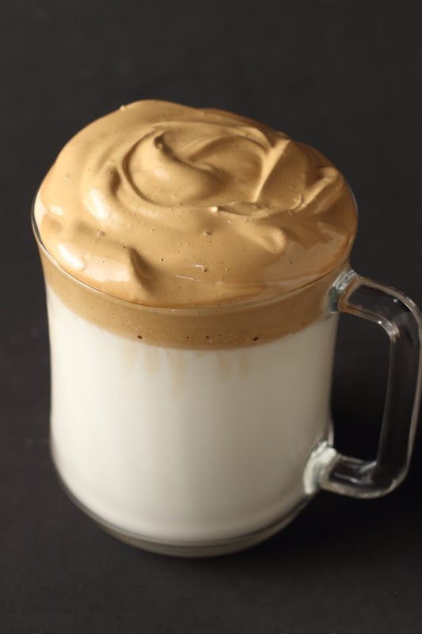
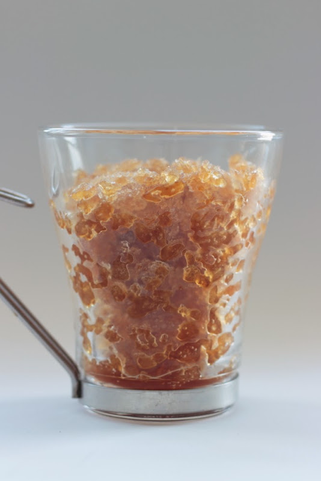
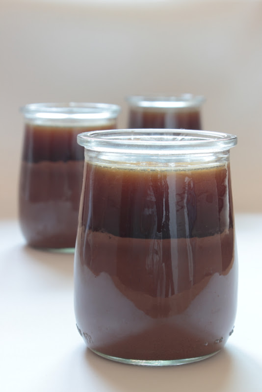

¿Quieres preparar algunas recetas con nuestro cafe?.
Aqui tienes paso a paso de como prepararlas

Consejo: Mezcla bien la capa superior con la leche antes de beber para disfrutar de la textura perfecta.

Consejo: Sírvelo inmediatamente en vasos fríos y acompáñalo con un copete de crema batida si lo deseas.

Consejo: Puedes bañarla con un chorrito de leche condensada o crema de leche fría justo antes de servir.